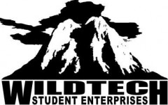

The Wilderness Technology Alliance

Website:
http://www.wildtech.org/v2/ Location:
Washington, DC
The WTA pioneers character and technology education programs through service learning. Students and volunteers gain work-based learning experiences by providing valuable technology products and services to their school or local community. Professional skills are gained while marketable products are produced to generate revenues that help sustain the program. The Alliance typically partners with state education agencies, school districts, community organiziations and other formal or informal teaching institutions, to implement its programs.
Supported Projects
Refurbished Computers Program Development
Jesse Schofield
3/2008 — 7/2008
Jesse assisted with the training of teachers and student in the refurbishing of computers. Jesse also recruited volunteers to assist with computer refurbishing. He introduced them to our program and made them aware of our procedures. He supported a program called TAP where we have trained Teachers to run after school clubs dealing with computer refurbishing. He also researched material to assist the teachers with technical assistance workshops. Jesse also assisted the manager with the general running of the office.
Jesse was very successful dealing with the teachers and the students. He is very personable and patient with students. Jesse compiled a list of Internet Service Providers for the schools in the TAP program. He also researched organizations who may be able to provided assistance in the local areas. He also assisted with the planning and running of a camp for teachers and students which was held in July of this year.
Jesse was able to arrange for a Spanish translation of a training manual. This is important as we serve many Hispanic people.
CTC Support and Program Building
Tony Brown
6/2007 — 6/2008
The WTA is establishing a community technology center (CTC) for the homeless as the CCNV shelter. It provides technology access and training programs for the shelter population, as well as other disadvantaged populations utilizing it. The VISTA member will train the homeless, then cultivate them to become full-time volunteers at the center.
These trained volunteers will build a self-sustaining service-learning model where trained members of the homeless community gain work-based learning experiences by performing vital technology repair and training services for local non-profit organizations and government agencies. Small fees will be charged, just enough to self-sustain the program.
Phase I: Train the VISTA member in WTA service-learning performance tasks (see above). The VISTA member spends a period of time pacticing these skills by training many members of the homeless community in the CCNV in technology.
Phase II: Provide the homeless with professional technology job experience by operating a real high-tech company. The VISTA member will be trained in the WTA Enterprise Curriculum and will use it to train and support advanced volunteers from the shelter in performing technology service-learning for the community.
Phase III: Armed with job experience provided in Phase II, service-learning volunteers have a better chance to obtain technology employment or to open their own firms. For a very small group of homeless having the skill set yet lacking the resources and confidence to start their own firms, the WTA and CCNV will provide desk space and the VISTA member will train and support them so they can open their own technology firms in the WTA/CCNV building.
Tony recruited 5 executive board members (all volunteers and all homeless) to lead the governance of WildTech-CCNV. ed the acquisition of all surplus technology for refurbishing.
Tony single-handedly landed a 200 computer donation from AARP, which will be distributed across the region.
Tony rebuilt two technology access labs in the shelter, providing technology access for 1300 people.
Implemented three sets of 12 week training classes for shelter residents. These included:
1. MS Word
2. MS Excel
3. Introduction to Computers
4. Computer refurbishing
Tony refurbished enough laptop computers to award to every homeless graduate of the 12 week training sessions.
Tony began building an eBay ecommerse training class so homeless can start selling on eBay.
Tony began building a city-wide computer recycling program and assisted in writing a proposal that was submitted to federal GSA and the District of Columbia to have homeless people manage their recyclable electronics.
Managed the writing of 5 grants to five agencies. All writing was done by homeless people.
“We now have a fully self-governing volunteer board of directors. All are homeless and all are equally helping to sustain the program. Tony developed a solid supply of computers, resources and more.”
- Lou August, supervisor
CTC Support and Program Building
Larry Gaither
1/2007 — 1/2008
Our two VISTA members have been instrumental in developing our community technology at the CCNV Homeless shelter. Wildtech has partnered with the Community for Creative Non-Violence the largest homeless shelter in the United States, to establish a community technology center (CTC) for the homeless at the shelter.
Our VISTAs have helped establish the technology center and develop resources for technology access and training programs for the shelter population, as well as other disadvantaged populations utilizing it. They have also laid the groundwork for building a self-sustaining service-learning model where trained members of the homeless community gain work-based learning experiences by performing vital technology repair and training services for local non-profit organizations and government agencies. Because of their work, the program has become famous,. The shelter now has quality computers, internet access and many of the 1300 residents are now getting their own computers. This success has been facilitated by the work of Tony and Larry, who have developed marketing and outreach materials, organized events and developed our list of partners and supporting organizations in the community. They have built the capacity of our organization by helping upgrade our constituent database so that we can better track donors and individuals. In regard to our programs, they have helped develop our curriculum and improve our process for refurbishing and distributing computers to program participants at the homeless shelter.
Program Development
Nathan Alden
6/2006 —
Provide youth and low-Income community members with professional technology job experience by operating a real high-tech company.
- Recruit, train and support service-learning participants
- Facilitate students and volunteers to: refurbish and place computers with training to low-income adults, repair computers, provide network services, design web sites for non-profit organizations, generate eCommerce transactions, host a community technology access lab, and provide a community technology help desk.
CTC Outreach and Development
Anthony Williams
10/2006 —
- Reach out to community based organizations, faith based organizations, social service organizations and educational organizations to drive attendance and volunteerism at the WTA center
- Bring WTA programs to Baltimore-area organizations. This involves marketing programs to these centers, increasing volunteerism to deliver the services and managing the logistics
- Bring the WTA’s “WildTech” program to Baltimore area schools. This task involves marketing the program to schools, training teachers in the service-learning tasks that will be performed by the students, an providing raw surplus technology that students in WildTech programs can process.
- Build an empowerment center at the WTA center by running technology service-learning as a high-technology company. Facilitate the acquisition of technology work for non-profit and government agencies for students and community members to execute. Facilitate students and volunteers to: repair computers, provide network services, design web sites for non-profit organizations, generate eCommerce transactions, host a community technology access lab, and provide a community technology help desk.
- Recruit and train teachers and community center leaders to implement
Volunteer Coordinator and Program Developer
Arthur Meadows
7/2009 —
The VISTA will be training volunteers to refurbish computers, set up networks, and do web design. The VISTA will also manage and coordinate volunteers to keep up the office. Lastly they will recruit, train and lead a team of volunteers to acquire low-income/non-profit recipients of programs, products and services.
1. Identify and secure expanded space for operations
2. Increase the ability of the WTA to provide workforce training in technology for shelter residents
3. Recruit and train volunteers to staff existing major program activities.
4. Develop new areas of possible endeavors (electronic commerce, computer recycling, technology thrift store)
Art did an excellent job and was a wonderful representation of the WTA.
Art secured the use of the old A&E building for use by the WTA, a 6000 SF building with room for offices, classroom, meeting room and computer lab. All at no cost to the WTA.
Art worked with the WTA president to make our center a Cisco certified training center, a COMPTIA training center and obtained free COMPTIA certification exams for shelter residents.
Art assisted in securing major donations from GSA, AARP and DHS - about 250 computers and monitors in all and encouraged a 15 volunteers to give their time with the center.
Art also visited a major recycler and secured their support with a computer recycling program with the WTA.
Related Content
None created yet!